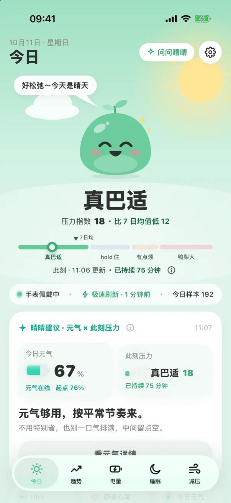
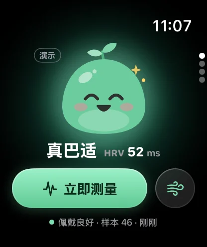

Know how stressed you are — at a glance.
Clairsy reads heart rate variability and heart rate from your Apple Watch, compares them with your own baseline, and tells you how you're doing right now — Chill, Steady, Tense or Stressed. 晴晴 changes with you. Everything is calculated on your iPhone and Apple Watch.
Requires iPhone with iOS 18 or later and a paired Apple Watch (watchOS 11 or later).



Screenshots from the current app (demo data). The app interface is in Simplified Chinese.
FEATURES
Built around your own baseline
Stress, in plain words
HRV and resting heart rate are compared with your personal baseline and turned into four easy levels — Chill, Steady, Tense, Stressed — with a stress index and 7-day average. Quick mood check-ins calibrate it to how you actually feel.
Daily Vigor & sleep
Each morning Clairsy sets your Daily Vigor from recovery, sleep and training load, then shows how stress drains it through the day. Sleep duration, score, sleep debt and stages at a glance.
Breathe it down
Resonance breathing (4 in, 6 out), cyclic sighing, 4-7-8 and box breathing, with 晴晴 breathing along — on iPhone and Apple Watch.
On your wrist
A watch app with your current level and a one-tap measurement, watch-face complications, Home Screen widgets, and optional local stress alerts.
Free to start, membership when you want more
Free: the Today page — stress level, Daily Vigor %, sleep duration, score, debt and stages — plus breathing exercises, free complications and a basic watch face. Clairsy Membership unlocks trends, Daily Vigor details, in-depth sleep analysis, custom stress-alert frequency, and all complications and watch faces — monthly or yearly subscription (7-day free trial for eligible Apple IDs) or a one-time lifetime unlock. All purchases are handled by Apple; prices are shown on the App Store purchase sheet.
SUPPORT
Frequently asked questions
Why do I need an Apple Watch?
Clairsy’s readings come from heart rate variability (HRV) and heart rate that Apple Watch measures and saves to Apple Health. iPhone alone doesn’t record HRV, so stress and HRV readings require a paired Apple Watch (watchOS 11 or later) that you wear. Wearing it overnight helps Clairsy learn your baseline.
What is HRV?
Heart rate variability is the small variation in time between heartbeats. Clairsy compares your HRV (SDNN, plus RMSSD on OS versions that support it) and resting heart rate with your own personal baseline — not a population average — to estimate your current stress level. It’s a wellness estimate, not a medical measurement.
My data isn’t updating. What should I do?
If you see “not enough data”, wear your Apple Watch for a few days, including overnight, and check that Clairsy has read access in Settings › Privacy & Security › Health › Clairsy. If the watch or complications don’t update, open Clairsy on your iPhone once, make sure your watch is connected, and add a Clairsy complication to your watch face. The system limits background refreshes, so readings may lag by a few minutes.
Is my data uploaded?
No. All calculations happen on your iPhone and Apple Watch. Clairsy has no servers and no accounts. See the Privacy Policy for details.
How do I restore purchases?
In Clairsy, open Settings and tap Restore Purchases, or tap Restore Purchases at the top right of the membership screen. Use the same Apple ID you bought with.
How do I cancel my subscription?
On your iPhone, go to Settings › [your name] › Subscriptions › Clairsy, or open Clairsy’s Settings and tap Manage Subscription. Cancel at least 24 hours before the current period ends to avoid renewal. See Apple’s guide: Cancel a subscription from Apple.
Refunds?
Apple handles refunds. Visit reportaproblem.apple.com.
How do I delete my data?
Delete Clairsy from your iPhone and Apple Watch to erase all of its local data. Clairsy never writes to Health.
Still need help?
Email us and we’ll get back to you, usually within 3 business days. Please include your iPhone and Apple Watch models and OS versions.
Developer: [Developer Name]